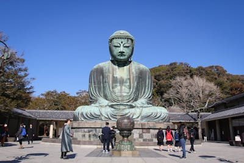

Shibuya, Harajuku, Shinjuku
Commencez la journée à Asakusa par la visite de l’impressionnant temple Sensoji. De là, une courte promenade
vous mènera à la tour TOKYO SKYTREE pour une vue imprenable sur la ville. Sinon, vous pouvez aussi vous diriger
vers le quartier de la gare de Tokyo où les grands magasins et les immeubles de bureaux se dressent à côté du parc
du Palais impérial qui offre un agréable espace vert pour changer d’air. Direction ensuite Ginza, le paradis du shopping
à Tokyo où sont réunies toutes les plus grandes marques. Pour terminer la journée, rendez-vous dans le quartier de Yurakucho
et installez-vous dans l’un des nombreux petits izakaya ou restaurants de yakitori (poulet grillé), situés sous les arcades,
pour goûter au Tokyo d’autrefois et prendre un verre.
Asakusa, quartier de la gare de Tokyo, Ginza
Commencez la journée à Asakusa par la visite de l’impressionnant temple Sensoji. De là, une courte promenade vous mènera à la tour TOKYO
SKYTREE pour une vue imprenable sur la ville. Sinon, vous pouvez aussi vous diriger vers le quartier de la gare de Tokyo où les grands
magasins et les immeubles de bureaux se dressent à côté du parc du Palais impérial qui offre un agréable espace vert pour changer d’air.
Direction ensuite Ginza, le paradis du shopping à Tokyo où sont réunies toutes les plus grandes marques. Pour terminer la journée, rendez-vous
dans le quartier de Yurakucho et installez-vous dans l’un des nombreux petits izakaya ou restaurants de yakitori (poulet grillé), situés sous
les arcades, pour goûter au Tokyo d’autrefois et prendre un verre.
Kamakura
Kamakura se trouve à environ une heure de Tokyo en train. Ancienne capitale de la classe des samouraïs à partir de la fin du XIIe siècle,
la cité est nichée entre mer et montagne, et entourée de nature. C’est un endroit qui mérite d’être visité encore et encore.
Avec de nombreux temples et sanctuaires remarquables, tels que le temple Kōtoku-in, qui abrite le Grand Bouddha de Kamakura,
le temple Hase-dera et le sanctuaire Tsurugaoka Hachiman-gū, cette région offre de magnifiques paysages en toute saison,
notamment grâce aux pruniers et cerisiers, aux hortensias, aux fleurs Higanbana ainsi qu’aux feuillages d’automne. Vous y passerez
assurément un agréable moment en vous promenant simplement le long de ses sentiers verdoyants. Vous pourrez également participer
à une méditation zen ou recopier des sutras, ou encore écouter des discussions sur le Dharma. Pour voir la mer, il vous faudra prendre
la direction de la plage de Yuigahama. Et pour goûter aux spécialités locales et acheter des souvenirs, vous pourrez vous diriger vers
les boutiques bien établies aux alentours de la gare de Kamakura.
